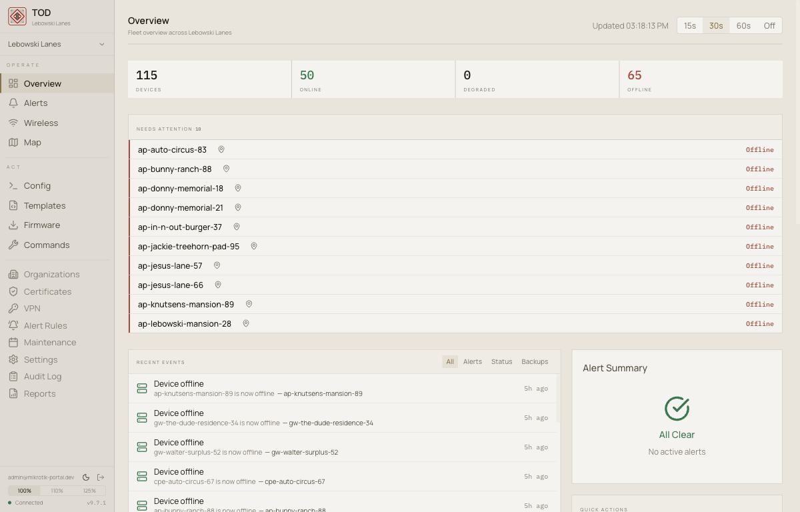
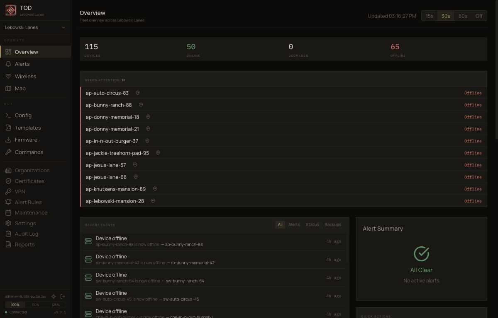
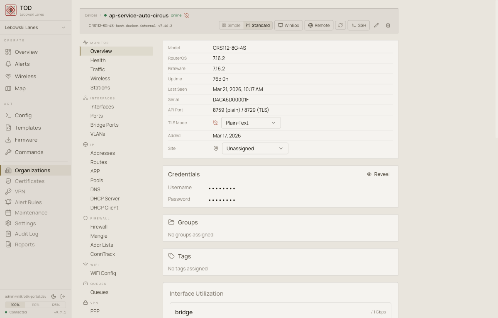
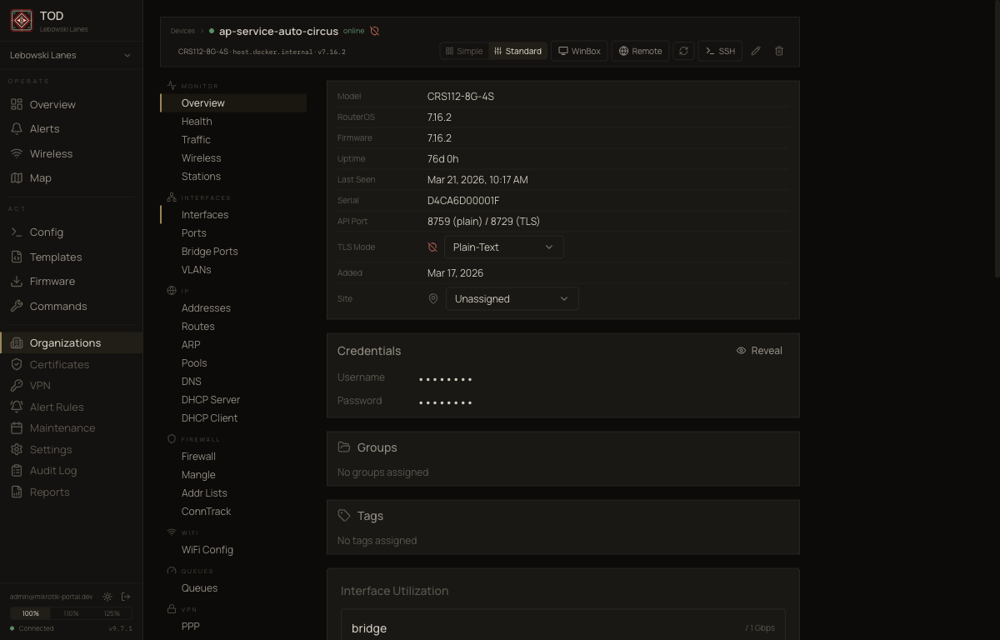
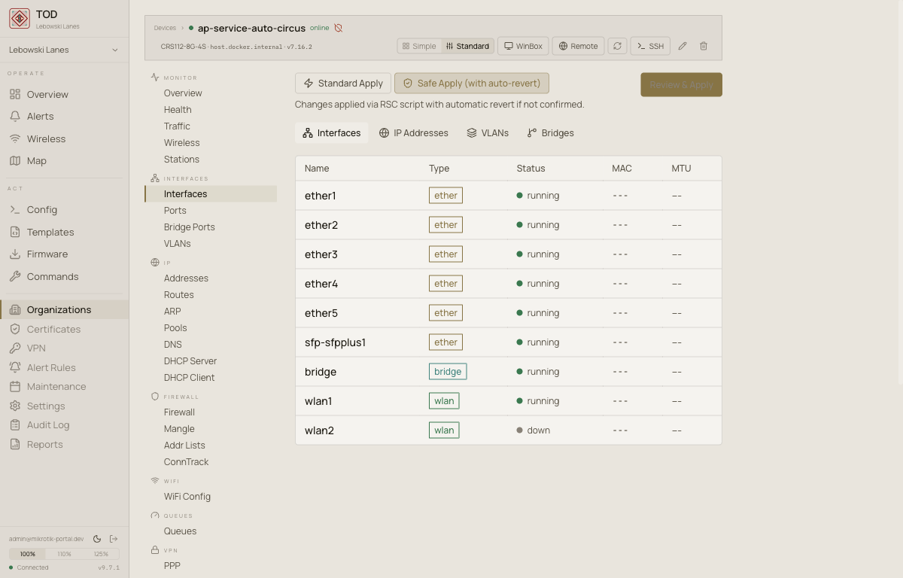
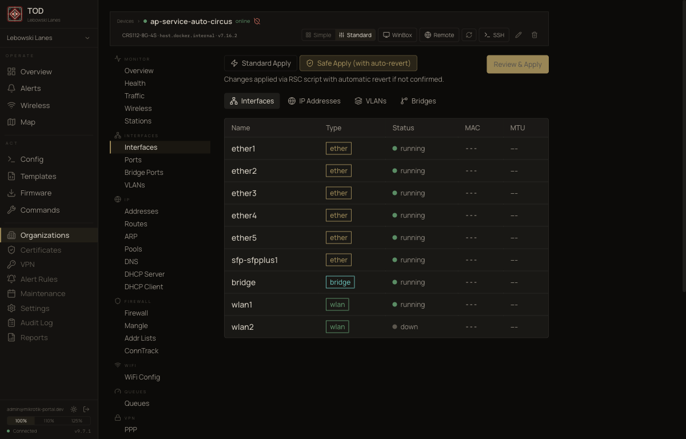
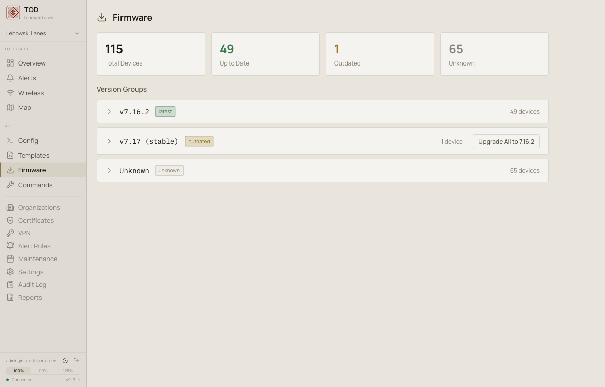
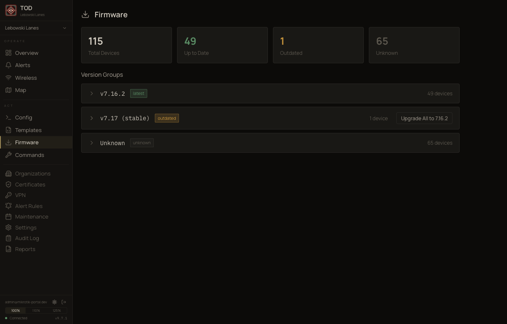

Self-hosted MikroTik operations
Operate your MikroTik fleet without gambling on every configuration change.
For MSPs and WISPs. Multi-tenant monitoring, browser-based WinBox, secure access through NAT, and config pushes that revert themselves if a device stops answering — built by a network engineer who has worked at ISPs and MSPs since 1997.
Early access — production milestone is v11

Fleet overview · View screenshots →What you get out of it
-
Change without lockout
Config restores and template pushes run inside a RouterOS safe-mode session. If a change cuts off your management path, the router reverts itself — no reboot, no site visit.
Direct config-editor edits apply immediately and are not rolled back. A push larger than RouterOS can undo — 100 actions — is refused rather than applied without a safety net.
-
Keep clients isolated
Tenancy is enforced in the database with PostgreSQL row-level security, not filtered in the UI. Device credentials are encrypted per tenant through a real KMS, access is role-based, and every change, login and admin action lands in an audit trail.
-
Reach routers behind NAT
WinBox in the browser, an SSH relay, and a WireGuard overlay — so you can work on a device without exposing its management ports to the internet.
-
See the whole site
MikroTik over the RouterOS API, plus SNMP v1/v2c/v3 for the switches, access points and UPSes sharing the rack. One fleet view, not two tools.
SNMP is read-only — no SET, no traps.
What it does
- Monitor device state across your fleet
- Push configuration with automatic rollback (config restore and templates)
- Track config changes in git
- Manage firmware versions
- WinBox in the browser
- SNMP device monitoring — switches, APs, UPSes alongside your Tiks
- VPN overlay for NAT traversal
- Multi-tenant with row-level security
- Zero-knowledge authentication (SRP-6a)
Screenshots







Early access
- Recommended for labs and evaluation today. Production readiness is the v11 milestone, and it is a milestone rather than a date.
- Things break and APIs change before v11. That is deliberate, not neglect — the schema and API get a stability commitment at v11, and committing earlier would mean either breaking it or slowing down.
- Support is written and asynchronous. Also deliberate: an answer that lands in the documentation helps whoever hits the same thing next, and an answer in a chat window helps nobody twice.
- Not for everyone. If you need a finished product with a phone number attached, this is not it yet.
Who builds this
I have been working at ISPs and MSPs since 1997. I am not a developer by trade — I am a network engineer who got tired of fifteen WinBox tabs, SSH sessions to three sites, and a firmware spreadsheet that had been wrong since last Tuesday. I have wanted this tool to exist for the better part of two decades and started building it half a dozen times before this one stuck. The longer version is here.
One person handles the code, answers the licensing mail, and handles support — which is exactly why support is asynchronous and in writing.
Status
| Version | 9.12.3 |
| License | BSL 1.1 (converts to Apache 2.0 in 2030) |
| Free tier | 250 devices |
| Commercial license | $499 one time — unlimited devices, perpetual |
| Stability | Breaking changes expected before v11 |
What the licence covers
Under 250 devices, you do not need to pay, and nothing is held back if you don't. The free and commercial builds are the same build. There is no feature gating, no “Pro” tab, no telemetry requirement, and no license server to call home to. Going over 250 devices does not currently disable anything either — it turns a number red on the About page. Whether you are over the line is between you and the licence.
$499 buys the right, once. One-time, perpetual, unlimited devices, no subscription and no renewal. It is what the BSL 1.1 requires for production use above 250 devices, and it is also what you need if you want to offer The Other Dude to third parties as a hosted or managed service. Updates are the same public repository everyone else gets — you are not buying a private build.
How to buy, honestly: email license@theotherdude.net and a signed key comes back. There is no checkout page yet. Keys are offline and cryptographically signed, so activation never contacts a server.
On 8 March 2030 the licence converts to Apache 2.0 on its own, and all of this stops mattering.
Setup
Requires Docker and PostgreSQL. See the documentation for full setup instructions.
# clone and run the setup wizard
git clone https://github.com/staack/the-other-dude.git
cd the-other-dude
python3 setup.py
The setup wizard handles database, cryptographic keys, OpenBao, reverse proxy, and Docker images.